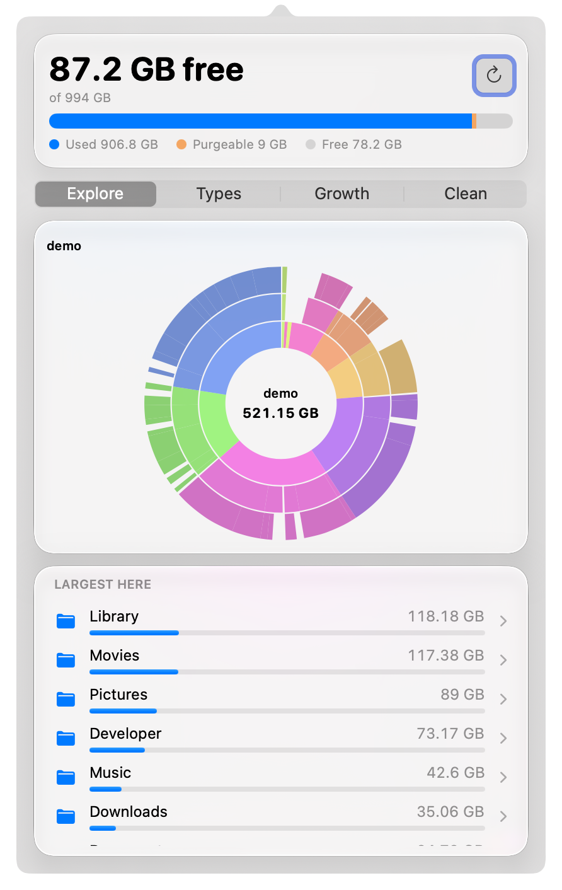
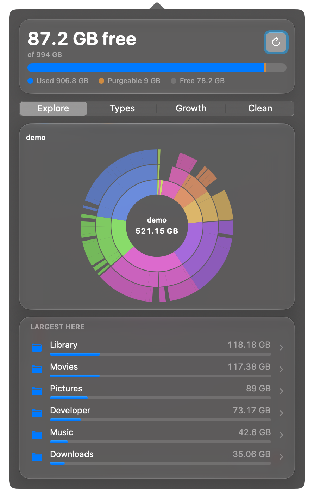
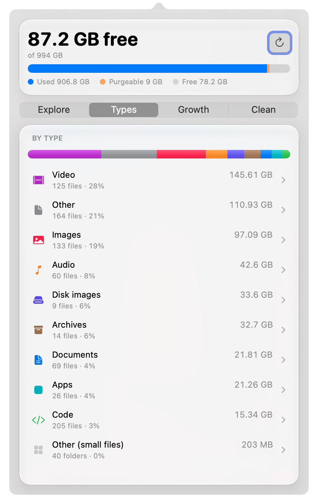
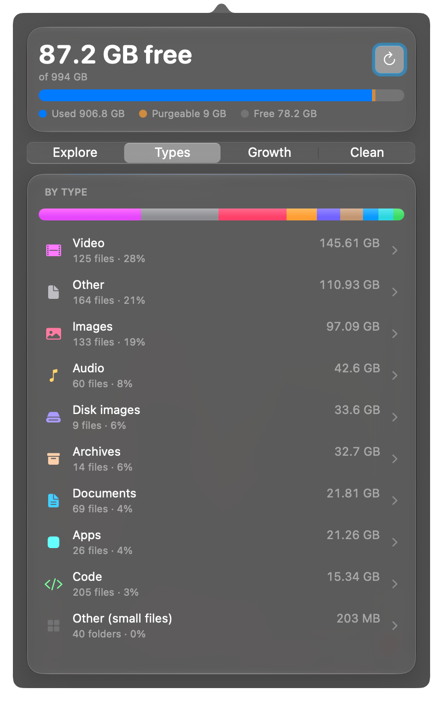
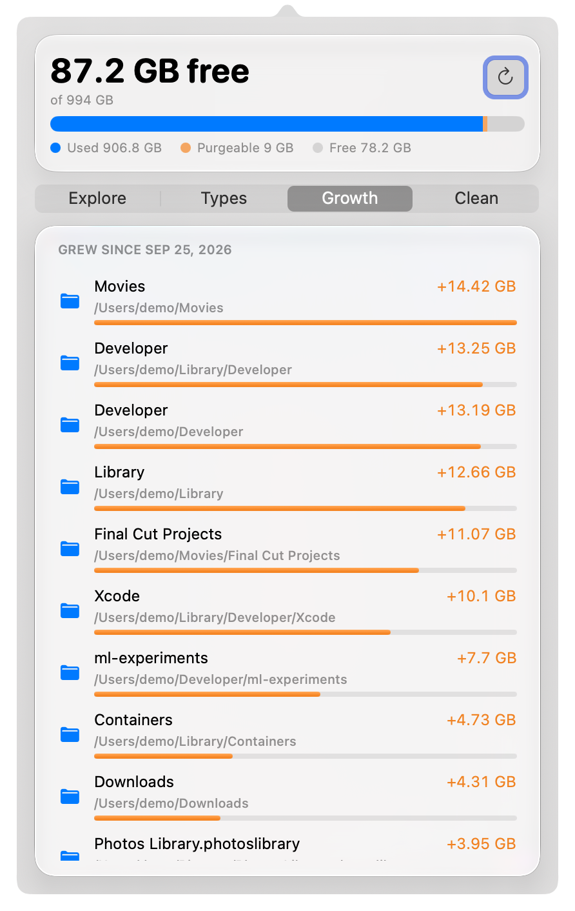
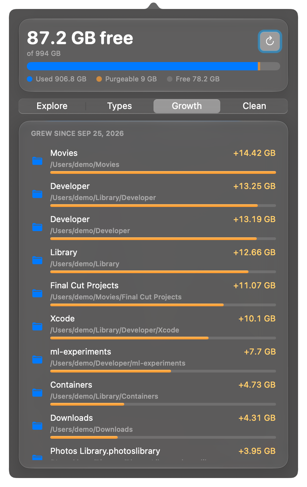
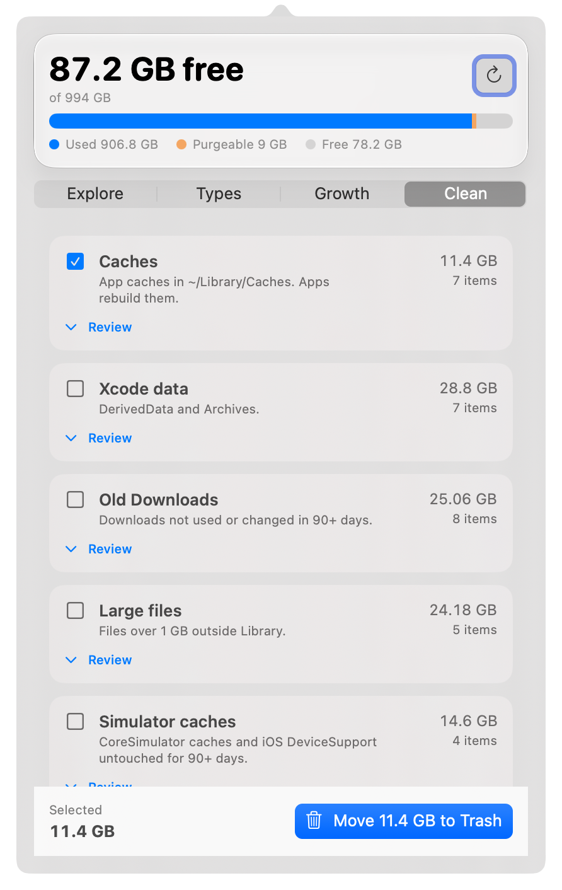
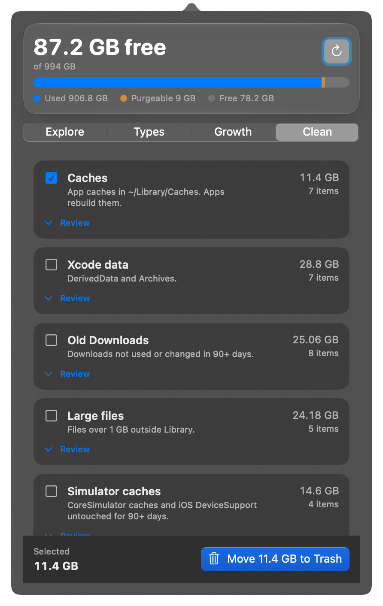

Native macOS menu bar app
See what fills your disk.
Clean it with care.
DustBar sits in the menu bar and shows your free space. Open it to see where the gigabytes went, then review each cleanup candidate before anything moves to the Trash.
- macOS 15+
- Apple silicon
- Swift 6
- No network
- No dependencies
- MIT
Not notarized yet. DMG downloads need one extra step on first launch. What that means.


Demo data. Real app, real popover.
Four views, four questions.
Where is it? What kind? What grew? What can go?
Explore
A sunburst that fills in live while the scan runs. Click any folder to drill down, with a Largest here list beside the map.
- Incremental refresh rescans only changed folders
- The last scan is cached, so the first view is instant
- Scope: home folder, or whole disk in browse-only mode
Types
Space by kind of file: video, images, audio, archives, documents, code and apps, each with a file count and share.
- One stacked bar for the whole picture
- File counts and percentages per type


Growth
Compares the current scan with earlier ones and lists the folders that grew, largest increase first.
- Needs at least one earlier scan to show changes
- Scan totals are kept in a small local history file


Clean
Rule-based candidates, each with a size and a Review link. You choose what to select, and nothing moves until you press Move to Trash.
- Caches, Xcode, simulators, logs and crash reports
- Developer caches, stale node_modules, old Downloads
- Large files, duplicates, Time Machine local snapshots


Watch the map draw itself.
Scanning does not hide behind a spinner. The sunburst fills as folders are measured, so the biggest areas are visible within seconds, long before the scan is complete.
The menu bar ring stays amber below 15% free and turns red below 5%. An optional alert fires at a threshold you choose.
Recorded from the demo build with synthetic data.
Nothing leaves without your say.
Cleaning is a short, explicit path. The two permanent actions are separate steps and each asks again.
- 1
Review
Every candidate is listed with its size and location. Open it to see the items inside.
- 2
Move to Trash
Selected items go to the Trash. Easy to undo.
Undoable - 3
Empty Trash
Asks separately. Removes only the direct children of
Permanent~/.Trash. - 4
Delete a snapshot
Time Machine local snapshots are deleted one by one, after a separate confirmation.
Permanent
A hard denylist, whatever a scan finds
- System folders
- Library internals: Keychains, Mail, Messages, Application Support, Containers
- Cloud folders
~/.ssh,~/.gnupg,~/.aws- App bundles
- The home folder and its top-level folders
Small, and quiet when idle.
Measured with the scripts in the repository. Every figure is labeled with how it was taken.
- —Binary sizeRelease, stripped
- —Idle memoryPhysical footprint, popover closed
- —Idle CPUMean over the idle window
- —Full scan, ~/LibraryWarm cache
- —Full scan, home folderWarm cache
- —Incremental refresh20 changed folders on ~/Library
Machine, macOS version and date load from benchmarks.json. Numbers reflect a warm disk cache.
Private by construction.
No network
DustBar makes no network connections. There is nothing to block.
No telemetry
No analytics and no accounts.
No dependencies
Pure Swift and system frameworks. The package has no third-party code.
Scan data lives in ~/Library/Caches/com.megasoft78.dustbar/ (tree.bin, history.json); settings are in the standard preferences plist.
Install DustBar.
Needs macOS 15 or later on Apple silicon (arm64). Intel is not supported; untested.
One command. Homebrew taps megasoft1978/homebrew-dustbar automatically the first time.
brew install --cask megasoft1978/dustbar/dustbarGatekeeper: the cask clears the quarantine flag itself, so the first launch needs no extra step. The build is still locally signed, not notarized.
Upgrade
brew upgrade --cask dustbarUninstall
brew uninstall --cask --zap dustbarGet DustBar-<version>.dmg (a .zip is also provided) from the latest release.
-
Open the DMG
Drag DustBar to Applications.
-
Open it past Gatekeeper
Current builds are locally signed and not notarized, so macOS warns on first launch. Right-click
DustBar.app, choose Open, then confirm. Or run:xattr -dr com.apple.quarantine /Applications/DustBar.app
Then grant Full Disk Access
For complete scans: System Settings > Privacy & Security > Full Disk Access, add /Applications/DustBar.app and enable it. Without it, folders macOS protects are skipped and sizes are incomplete.
Questions
Is it notarized?
Not yet. Builds are signed locally, not notarized. The Homebrew cask clears the quarantine flag for you. A DMG or zip download needs one extra step on first launch.
Will Gatekeeper complain?
For a DMG or zip, once: macOS warns on first launch. Right-click DustBar.app in Applications, choose Open, then confirm. Or run:
xattr -dr com.apple.quarantine /Applications/DustBar.appDoes it run on Intel or older macOS?
Apple silicon with macOS 15 or later is the supported setup. Intel is not supported and untested.
How do I update?
With Homebrew, run this. With the DMG or zip, download the new DustBar-<version>.dmg and drag it to Applications, replacing the old app. There is no automatic update.
brew upgrade --cask dustbarWhat can DustBar delete?
Only what you select and confirm, in Clean or from the Explore list, and only outside the denylist. Items go to the Trash first. Two actions are permanent and confirmed separately: Empty Trash, and deleting a Time Machine local snapshot. Always read the Review list.
Why Full Disk Access?
macOS hides some folders from apps without it. DustBar still works, but skips them and reports smaller sizes.
What does it store?
tree.bin (the last scan, for an instant first view) and history.json (scan totals for Growth), both in ~/Library/Caches/com.megasoft78.dustbar. Settings live in the standard preferences file, ~/Library/Preferences/com.megasoft78.dustbar.plist.
How do I uninstall it?
With Homebrew:
brew uninstall --cask --zap dustbarOtherwise quit DustBar from its menu, then remove the app, its cache and its settings:
rm -r /Applications/DustBar.app
rm -r ~/Library/Caches/com.megasoft78.dustbar
rm -r ~/Library/Preferences/com.megasoft78.dustbar.plistThen remove DustBar from Full Disk Access and Login Items in System Settings.
Can the reminder (default weekly) delete anything?
No. It is a reminder notification. It never deletes anything.